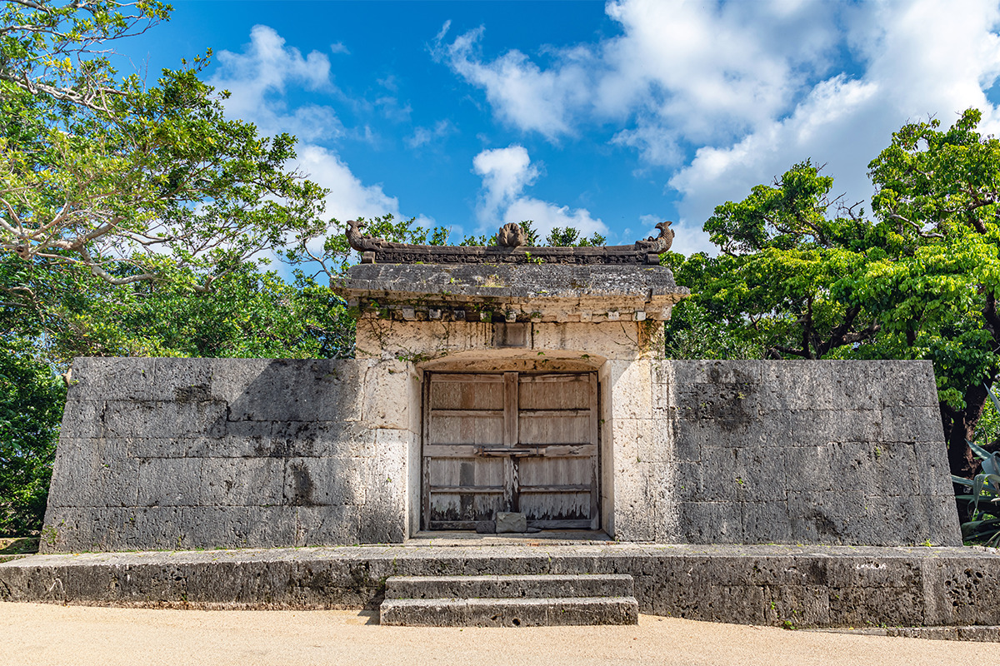
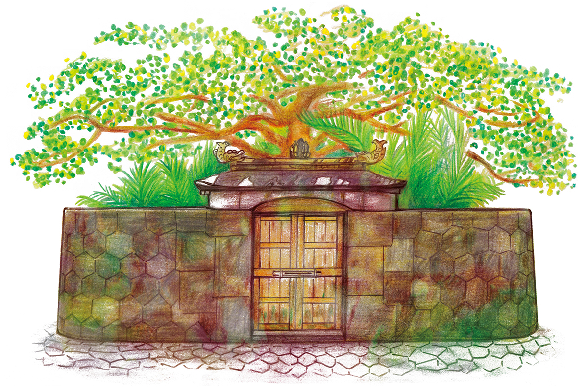
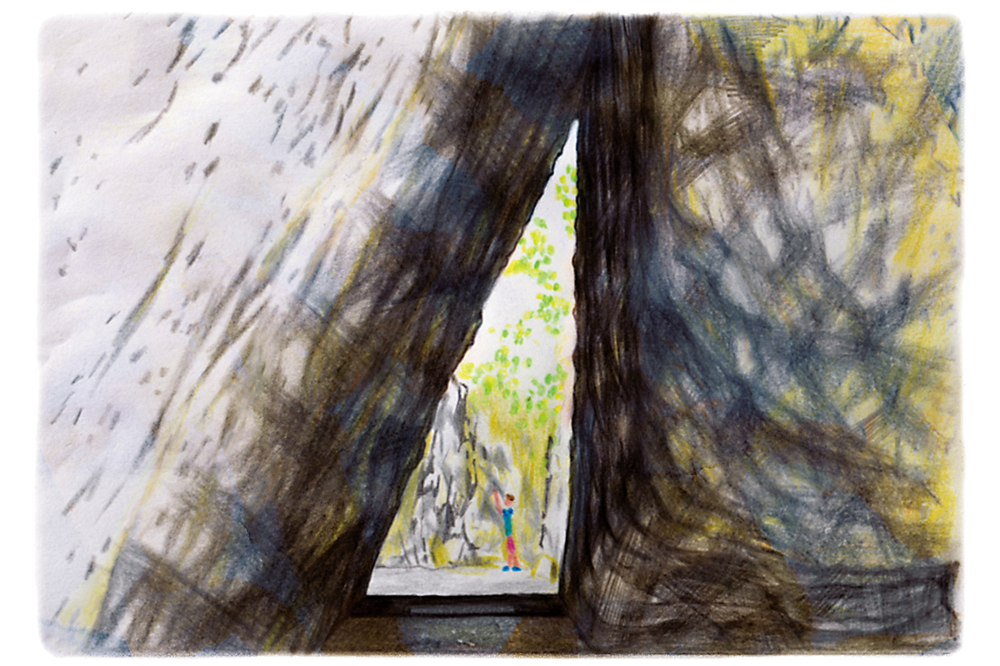
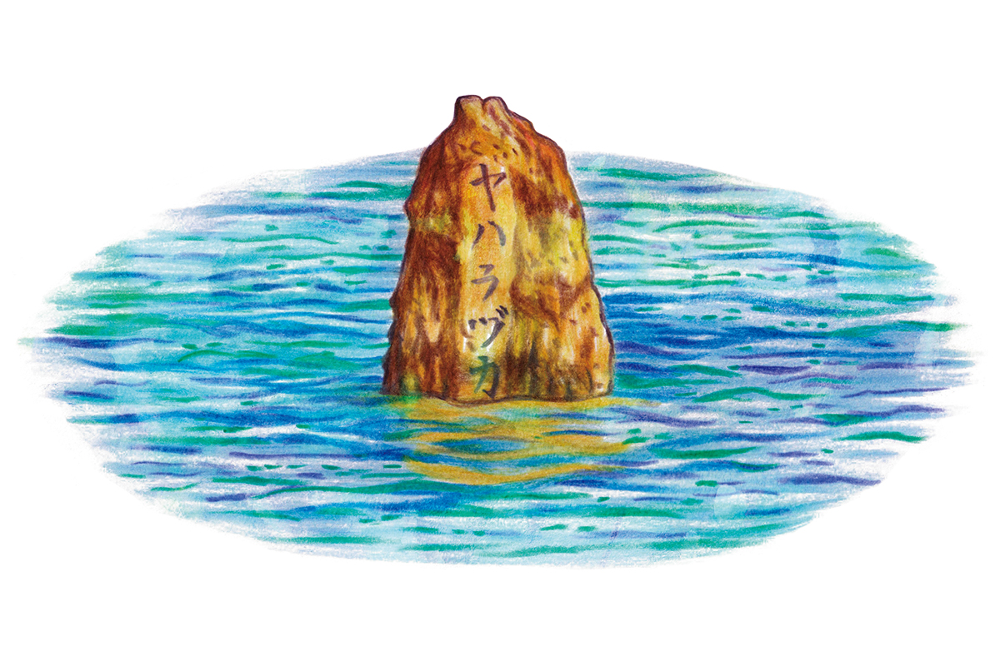

Префектура Окинава · остров Окинава · история и мифы
Мифы Рюкю: священные рощи утаки, где боги спускались к людям

Чем больше узнаёшь об Окинаве, тем яснее понимаешь, что когда-то это была другая страна. Под её обычаями и праздниками лежат мифы королевства Рюкю, и места из этих мифов можно увидеть своими глазами.
Проводник
Историк, который рассказывает о Рюкю
По мифическим местам Окинавы нас провёл историк Рюкю, родившийся в Нахе в 1969 году. Он много лет рассказывает об истории и культуре королевства в местных СМИ, пишет сценарии к фильмам и сериалам и консультирует их, придумывает туры и сам водит группы. Его газетная колонка выходит и в виде видеороликов на YouTube.
Об Окинаве часто говорят, что её культура сохранилась со времён Рюкю. Примеров не сосчитать, и в основе многих из них, по словам историка, лежат мифы. Самая древняя из сохранившихся летописей королевства, «Тюдзан сэйкан», открывается мифом о сотворении страны Рюкю. Для Японии такую же роль играют «Кодзики» и «Нихон сёки».
Утаки
Священная роща без святилища
Прежде чем перейти к мифам, нужно объяснить два слова: утаки и Нирай-канай. Утаки это священное место, которому поклоняются и сегодня, и такие места есть по всей Окинаве. Самые известные из них внесены в список Всемирного наследия: Сэфа-утаки и каменные ворота Сонохян-утаки. Ещё одно, Суимуи-утаки, находится прямо в замке Сюри, но почти все посетители покупают билет и проходят мимо.

Историку часто задают один и тот же вопрос: где в утаки находится святыня, где храмовое здание? Когда он отвечает, что их нет, люди удивляются. Дело в том, что утаки не место, где живёт божество. Боги Рюкю обитают в ином мире, Нирай-канай, а утаки это священная земля, куда они спускаются, когда их зовут люди. Чаще всего там нет ничего, кроме дерева, в которое вселяется бог.
Миф
Как богиня Амамику создала острова
Когда мир ещё пребывал в хаосе, бог-творец велел богине Амамику: «Внизу есть священное место, куда должны сойти боги, но оно ещё не стало островом. Это досадно. Сойди и создай там землю». Это место и стало Рюкю.
Семь мест из мифа, созданных Амамику, сегодня называют «семью утаки Рюкю». В их числе и Сэфа-утаки, и Суимуи-утаки, и почти во всех до сих пор молятся. Первым Амамику создала Асумуи-утаки в селе Кунигами, на самом севере острова Окинава. Сейчас рядом работает туристический парк Дайсэкириндзан с каменными скалами, и там есть гиды, так что туда стоит заехать.

Сэфа-утаки
- Адрес
- префектура Окинава, Нандзё, Тинэн, Кудэкэн, 539
- Телефон
- +81 98-949-1899 (центр «Мидори-но яката Сэфа»)
- Часы работы
- 9:00–18:00, с ноября по февраль до 17:30
- Выходные
- шесть дней в году, с 1 по 3 день пятого и десятого месяцев по лунному календарю (уточняйте на сайте)
- Цены / Вход
- 300 иен
Дайсэкириндзан (Асумуи-утаки)
- Адрес
- префектура Окинава, Кунигами, Гинама, 1241
- Телефон
- +81 980-41-8117
- Часы работы
- 9:30–17:30 (вход до 16:30)
- Выходные
- без выходных
- Цены / Вход
- 1200 иен
Паломничество
Путь короля и жриц
В эпоху королевства обряды вели норо, священные жрицы. Удивительно, но они были государственными служащими. Норо призывали богов и руководили молитвами: в Рюкю считалось, что женщина ближе к богам, чем мужчина. Историк сравнивает их с Химико, правительницей древней Японии.
До середины XVII века король и жрицы совершали паломничество по утаки из мифов, и маршрут следовал продолжению мифа о сотворении. Создав землю, Амамику создала людей и научила их выращивать зерно. Поэтому паломники шли к местам, где, по преданию, начали растить рис: Яхарадзукаса, Хамагава-утаки и Укиндзю-Хаиндзю. Они переправлялись и на остров Кудака, где впервые посеяли ячмень. Это одна из причин, почему Кудаку называют островом богов: он есть в мифе.
Король, которому боги доверили страну, первую молитву возносил у каменных ворот Сонохян-утаки. Они стоят сразу за воротами Канкаймон замка Сюри, и здесь просили о безопасном пути. Ворота никогда не открывают. За ними раньше простирался лес Хантан-яма, куда спускались боги.
Каменные ворота Сонохян-утаки
- Адрес
- префектура Окинава, Наха, Сюри, Мавадзи, 1-7 (парк замка Сюри)
- Телефон
- +81 98-886-2020 (управление парка замка Сюри)
Суимуи-утаки
- Адрес
- префектура Окинава, Наха, Сюри, Тоноцудзи-тё, 3-1 (парк замка Сюри)
- Телефон
- +81 98-886-2020 (управление парка замка Сюри)
Побережье
Вид на остров богов
Затем паломники, побывав ещё в нескольких местах, приходили туда, где начали выращивать рис. От замка Сюри это примерно 40 минут на машине. В глубине парковки кафе «Ябусати» тихо стоит Ябусацу-утаки. Трудно поверить, что сюда приходил на поклонение король.
Самое интересное начинается в 30 метрах дальше. Пройдите через сумрачный лес, и справа откроется смотровая площадка. В ясный день вид отсюда не описать словами: белый песок, море всех оттенков синего, а на востоке остров богов Кудака. Там, где голубое небо сходится с синим морем, люди Рюкю видели путь в Нирай-канай. Верили, что всё приходит оттуда. На рассвете кажется, что солнце рождается именно там, и в Рюкю действительно считали, что даже солнце каждый день заново рождается в Нирай-канай.

Под обрывом смотровой площадки лежат Яхарадзукаса, где, по преданию, высадилась Амамику, Хамагава-утаки с родником, где она жила поначалу, и Укиндзю-Хаиндзю, первое рисовое поле. Здесь король проводил обряд, связанный с рисом. Историк замечает, что он чем-то похож на японский праздник урожая Ниинамэсай.
Страна целиком отправлялась в паломничество, и в этом был смысл королевской власти: чтобы небо было на его стороне, король путешествовал по миру мифов. Позже этот путь стали повторять и простые люди. Сегодня он известен как Агари-умаи, «обход восточных святынь». После войны рисовое поле превратилось в плантацию сахарного тростника, но обычай жив: примерно раз в три года по этому пути проходят родственники, связанные кровным родством.
Всё хорошее и всё плохое приходит из-за моря, из Нирай-канай. Окинаву называют краем культуры тямпуру: она принимает чужое из-за моря и переделывает под себя. Рюкю стало частью Японии, потом пришла буря войны, нахлынула американская культура, через 27 лет острова снова вернулись к Японии, и в 2022 году этому исполнилось 50 лет. Но в глубине, считает историк, по-прежнему живёт древний духовный мир Рюкю.
Яхарадзукаса, Хамагава-утаки, Укиндзю-Хаиндзю
- Адрес
- префектура Окинава, Нандзё, Тамагусуку, Хякуна
- Телефон
- +81 98-948-4611 (туристическая ассоциация города Нандзё)
Кафе «Ябусати» (Ябусацу-утаки)
- Адрес
- префектура Окинава, Нандзё, Тамагусуку, Хякуна, 646-1
- Телефон
- +81 98-949-1410
- Часы работы
- 11:00–18:00
- Выходные
- среда (в праздники открыто)
Остров Кудака
- Адрес
- префектура Окинава, Нандзё, Тинэн, Кудака
- Телефон
- +81 98-948-7803 (центр развития острова Кудака), +81 98-948-7785 (паромная компания «Кудака кайун»)
- Как добраться
- о расписании парома спрашивайте в «Кудака кайун»
Фото: mtaira.